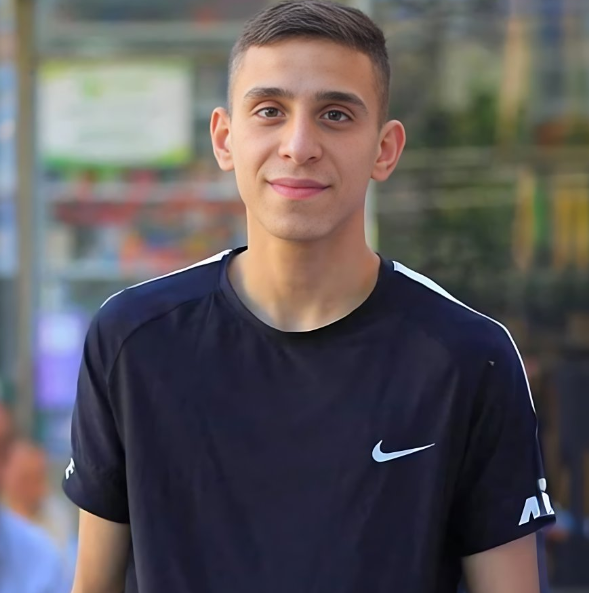
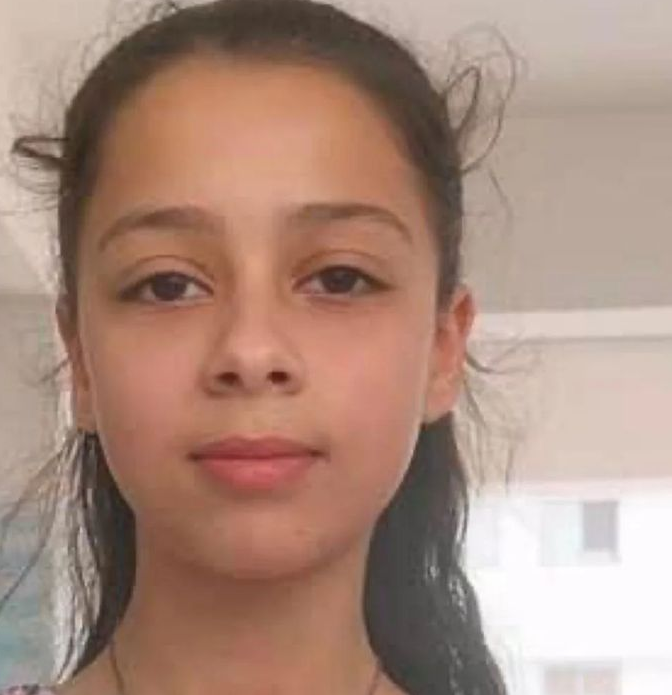
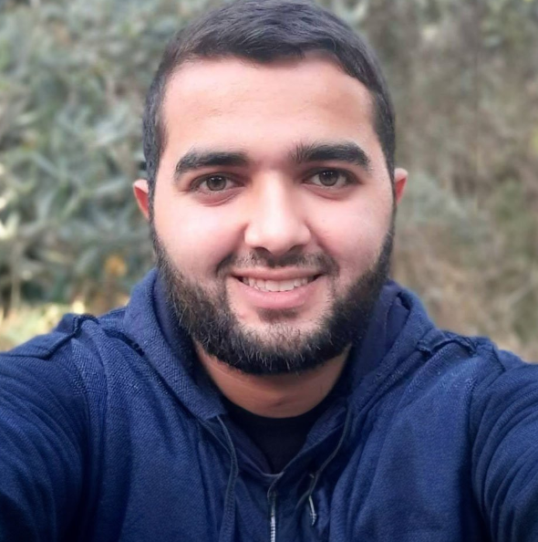

A pesar de que Israel asegure estar librando una guerra contra Hamás, 35.152 palestinos, el 40% niños,
han sido asesinados desde el pasado 7 de octubre,
cuando se produjo el ataque sorpresa de Hamás que ha desatado el asedio y el bloqueo total de Israel sobre la Franja.
A pesar de que Benjamin Netanyahu se refugie en su derecho a la defensa y
la declaración de guerra contra Hamás, las escuelas, los templos,
los hospitales, las tiendas y los hogares de los palestinos están reduciéndose a escombros por las bombas y se ha convertido
en realidad en un “castigo colectivo”, como lo ha llamado la ONU, contra la población.
Ninguno de ellos era un número, cada uno tenía un hogar, una historia, una familia y un sueño.
Periodista: Hamza Wael Hamdan Al-Dahdouh (27 años) Yazid Jihad Muhammad Al-Ghannam (1 año)Periodista: Issam Haider Al-Lulu (69 años)Muhammad Murad Al-Deek (16 años)Yassin Abdullah Hassan Al-Asmar (28 años)Awni Adel Awni Al-Dous (12 años)Paramédico: Ahmed Aziz Saeed Al-Madhoun (37 años) Periodista: Samer Khalil Salman Abu Daqqa (45 años)Abdul Qadir Muhammad Al-Zubaidi (61 años) Adam Samer Al Ghoul (8 años) Periodista: Nermin Nasr Haboush (36 años) Paramédico: Ghadeer Muhammad Hussein Dawahid (30 años)Issa Ali Al-Qadi (66 años)
Wadih Shadi Alian (14 años) Selina Muhammad Shawqi Al-Rayes (1 año) Youssef Omar Mahmoud Zagdad (11 años)Reem Ali Badwan (Alma del alma) (4 años)Ibrahim Al Hasayna (3 años) Issam Tariq Fadel Ghanem (13 años)
Hind Rajab (6 años) Lauren Al Koumi (2 años) Mahdi Saed Hamed Hassouna (11 años) Ali Muhammad Ali Abd Allah (17 años) Médico: Adnan Ahmed Al-Barash (49 años)

Nidal Mamoun Ali Abu Obaid (20 años)

Jana Zuhair Madi (13 años) Jamal Mahmoud Kafarma (5 meses) Periodista: Nermin Qawwas (28 años) Amal Al Durr (6 años) Tariq Ali Badwan (3 años) Maria y Masa (6 meses) Salam Khalil Muhammad Mima (32 años) Paramédico: Youssef Abdel Rahman Youssef Zaino (35 años) Yihad Muhammad Al-Ghannam (7 años)

Abdul Wahab Awni Abu Aoun (25 años) Ahmed Mohamed Samar (13 años) Ruqaya Ahmed Odeh Jahalin (4 años) Saeed Raed Jaradat (17 años) Khalil Moaz Khalil Ayyash (2 años)